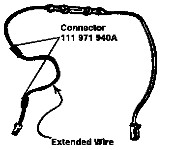
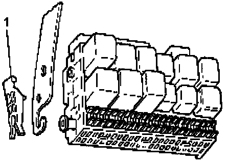
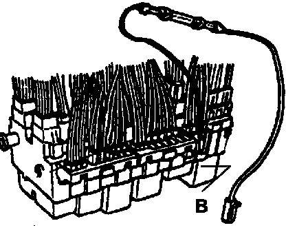
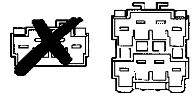

Section B - 95 Passat
SECTION B1995 Passat ALL
I. Install Resistor Wire - P/N 1HM 971 284A (Modified)

Prepare resistor wire 1HM 971 284A for installation into the vehicle by using the minimum dealer requirement tool VAS 1978 Wiring Harness Repair Kit to extend the wire an additional 50 cm (19 3/4 in.). Use wire, part number N 037 0211, for this extension as follows:
^ Cut resistor wire approximately 4" (10 cm) from the SMALL connector
^ Extend resistor wire by using necessary tools and two (2) connectors, P/N 111 971 940A, from VAS 1978 Repair Kit
^ Use the hot air blower with special adapter (VAS 1978/14 and the nozzle VAS 1978/15) to shrink wire connectors to obtain an air tight seal
^ Insulate connectors by wrapping yellow tape (found in the VAS 1978 Repair Kit) around each connection

^ Remove fuse box (central electric panel) cover located under the dashboard on the driver's side
^ Remove driver's side knee bar
^ Remove center console
^ Remove fuse box by pulling out eft and right side securing clips (1)

^ Locate the BLACK junction box (-B-)on top of the fuse box
(NOTE: This is terminal 15, and has all black wires going into this connector)
^ Connect the LARGE connector from modified resistor wire 1HM 971 284A to the BLACK junction box

Important Note: IF THE BLACK 4-POINT JUNCTION BOX HAS NO OPEN TERMINAL, REPLACE 4-POINT JUNCTION BOX WITH A NEW 8-POINT JUNCTION BOX, PART NUMBER 3A0 937 517.
- Route the resistor wire through the cable holding clips located under the steering column, around the dash panel support and insert the SMALL connector into the diagnostic connector strip on the tunnel forward of the gear selector
CAUTION: Make certain that the cable is not binding, cannot pinch or does not come in contact with metal edges.
^ Reinstall fuse box; ensure that clips (-1-) engage in retainer and resistor wire is routed properly and cannot rattle
^ Reinstall center console and knee bar
^ Reinstall fuse box cover
II. Throttle Adjustment
- Turn ignition switch to the "ON" position (engine NOT running)
- Attach VAG 1551; go to 02 for transmission electronics, push 08 to read measuring blocks, then push 001 for measuring block # 1
- Push accelerator pedal to the floor and hold for 5 seconds, then release
* While pushing the accelerator pedal to the floor, the fourth position of display field 4 should change from 0 to 1. This is the kick down switch signal.
- Exit from 1551 and remove the ignition key